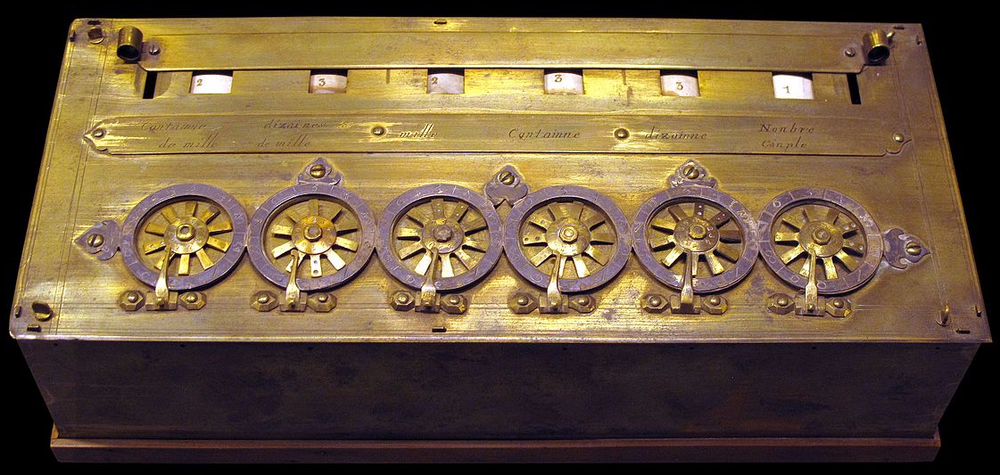

| |
|---|
| The Antikythera Mechanism was in a ship which is assumed to be Ancient Greek and, when it sank just off the coast of Antikythera island in the middle of the 1st century BCE it carried a huge number of artefacts dating back to as early as the 4th century BCE. The mechanism was ignored even when someone saw a gear on it. It was ignored because people didn't think that technology from 2000 years ago would be possible to exist. |
|  |
|---|
|
Pascaline, also called Arithmetic Machine, the first calculator or adding machine to be produced in
any quantity and actually used. The Pascaline was designed and built by the French mathematician -philosopher Blaise Pascal between 1642 and 1644. It could only do addition and subtraction, with numbers being entered by manipulating its dials. Pascal invented the machine for his father, a tax collector, so it was the first business machine too. He built 50 of them over the next 10 years. |